Nadie ha visto nunca un átomo con los ojos, y sin embargo sabemos cuántos protones tiene el oro y de qué color emite el hidrógeno. Hoy recorreremos un siglo de ideas, de Dalton a Bohr, y veremos cómo cada experimento obligó a rehacer el modelo anterior.
Temas que exploraremos:
Dalton: átomos indivisibles
Thomson: el electrón y el «pudín de pasas»
Rutherford: el núcleo atómico
Bohr: niveles de energía y espectros
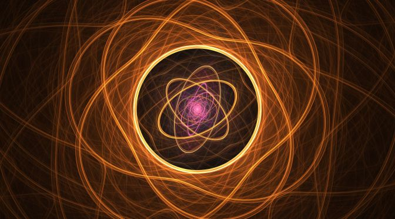
Pregunta guía
Si nunca vemos un átomo directamente, ¿cómo decidimos qué forma tiene? La respuesta es la misma en toda la clase: lo golpeamos con algo (corrientes eléctricas, partículas alfa, luz) y miramos cómo responde.
Cinco modelos en un siglo
Un modelo atómico no es «verdadero» o «falso»: es una herramienta que funciona hasta que aparece un dato que no explica
1803
Dalton Átomos indivisibles, como bolas macizas
1897
Thomson Descubre el electrón
1904
Thomson Esfera positiva con electrones incrustados
1911
Rutherford Átomo nuclear: casi todo es vacío
1913
Bohr Niveles de energía cuantizados
1926
Schrödinger Orbitales: el átomo cuántico
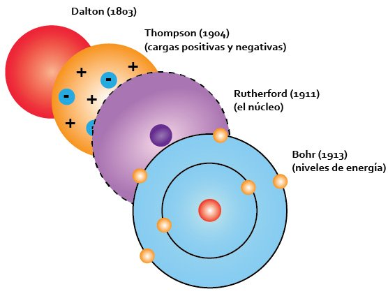
Dalton (esfera), Thomson (pudín), Rutherford (núcleo) y Bohr (niveles de energía).
El patrón que se repite
Cada modelo nace de un experimento que el anterior no puede explicar: la electrólisis y los rayos catódicos rompen la esfera de Dalton; el experimento de la lámina de oro rompe el pudín de Thomson; la estabilidad del átomo y los espectros rompen el átomo planetario de Rutherford.
Una idea para llevar
El modelo que usamos hoy en química y física no es el último de la lista: es una refinación constante. Cuando aparezca un dato nuevo, el modelo se ajusta; cuando el ajuste ya no alcanza, se reemplaza.
Mapa de la clase
Parte I · ¿Divisible?
Dalton, la electricidad y el descubrimiento del electrón. Simulador del tubo de Thomson.
Parte II · El núcleo
Experimento de Geiger–Marsden–Rutherford y por qué el átomo de Rutherford sería inestable. Simulador de dispersión.
Parte III · Los niveles
Bohr, espectros atómicos y la fórmula de Balmer. Simulador del átomo de Bohr y espectroscopio virtual.
1. Modelo atómico de Dalton (1803–1808)
La idea de que la materia está hecha de «átomos» (del griego átomos, «indivisible») viene de Demócrito, pero era filosofía. John Dalton la convirtió en una teoría química: propuso átomos con masa definida y mostró que con ella se podían predecir resultados de laboratorio.
Postulados
Los elementos están formados por átomos: partículas materiales independientes, inalterables e indivisibles.
Los átomos de un mismo elemento son iguales en masa y en el resto de propiedades.
Los átomos de elementos distintos tienen masa y propiedades distintas.
Los compuestos se forman por la unión de átomos de los elementos correspondientes en una relación de números enteros sencillos.
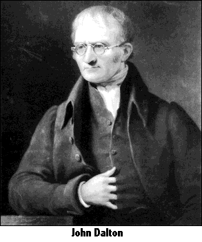
John Dalton (1766–1844), maestro y químico inglés.
Lo que el modelo explica
Conservación de la masa
Lavoisier (1789) había observado que la masa total no cambia en una reacción. Para Dalton es evidente: los átomos ni se crean ni se destruyen, solo se redistribuyen.
Proporciones definidas
Proust (1799): un compuesto siempre tiene los mismos elementos en la misma proporción de masa. El agua es siempre 1 de H por 8 de O en masa porque siempre es H₂O.
Proporciones múltiples
Predicción propia de Dalton: si dos elementos forman varios compuestos, las masas de uno que se combinan con una masa fija del otro están en relación de enteros pequeños.
Compuesto
Masa de C
Masa de O
O por 12 g de C
Monóxido de carbono, CO
12 g
16 g
16 g
Dióxido de carbono, CO₂
12 g
32 g
32 g
Relación entre las masas de oxígeno
1 : 2
Con 12 g de carbono, el oxígeno que se combina es 16 g o 32 g: nunca 20 g ni 25 g. Los átomos solo se combinan en unidades enteras.
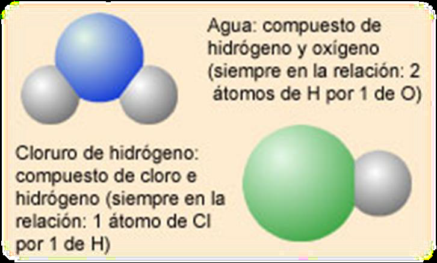
Relaciones enteras sencillas: agua, 2 de H por 1 de O; cloruro de hidrógeno, 1 de Cl por 1 de H.
Una nota sobre las fechas
Dalton presentó la teoría en 1803 y la publicó completa en A New System of Chemical Philosophy (1808). Es habitual verla fechada «hacia 1800».
2. ¿Qué dejó sin explicar el modelo de Dalton?
Un modelo de esferas macizas no puede dar cuenta de la electricidad, y la electricidad está en todas partes
Pistas que se acumularon en el siglo XIX
Electrización por frotamiento. Un peine frotado atrae papelitos: la materia neutra puede cargarse. Si el átomo fuese una esfera sin estructura, ¿de dónde salen las cargas?
Electrólisis (Faraday, 1830s). La masa depositada en un electrodo es proporcional a la carga que circuló, y los depósitos de distintos elementos guardan relaciones enteras: la carga también parece venir en «paquetes» iguales.
Descargas en gases a baja presión. Al aplicar alto voltaje a un tubo casi vacío aparece un resplandor: algo sale del electrodo negativo (el cátodo).
Radiactividad (Becquerel, 1896). Algunos átomos emiten radiación y se transforman en otros: ¡no son «inalterables»!
Espectros de líneas. Cada elemento emite colores propios. Una bola maciza no tiene por qué dar «huellas dactilares» de luz.
Tubo de descarga: el resplandor señala que «algo» viaja del cátodo al ánodo.
Se puede conservar el espíritu
Los postulados 1 y 2 son falsos tal como los enunció Dalton, pero la idea central (la materia está hecha de unidades discretas que se reordenan en las reacciones químicas) sigue vigente.
Los postulados de Dalton, vistos hoy
Postulado
Veredicto actual
Qué lo cambió
1. Átomos indivisibles e inalterables
Falso
Electrón (1897), núcleo (1911), radiactividad y fisión
2. Átomos de un elemento, idénticos en masa
Falso en masa; cierto en química
Isótopos (Soddy y Aston, 1910s): mismo número de protones, distinta masa
3. Elementos distintos, átomos distintos
Cierto
El número atómico \(Z\) identifica al elemento
4. Combinación en enteros sencillos
Cierto en general
Con excepciones: compuestos no estequiométricos como \(\mathrm{FeO}_{1,05}\)
Conservación de los átomos en reacciones químicas
Cierto
Solo falla en reacciones nucleares, donde los átomos sí se transforman
¿Y si los átomos son tan pequeños que nunca se verán?
En 1908 Jean Perrin usó el movimiento browniano (Einstein, 1905) para medir el número de Avogadro y dejó pocas dudas de que los átomos existen. Desde 1981, el microscopio de efecto túnel permite incluso «ver» átomos individuales sobre una superficie.
Imagen de microscopio de efecto túnel: cada protuberancia es un átomo.
3. Descubrimiento del electrón (J. J. Thomson, 1897)
En un tubo de vidrio casi vacío, el cátodo emite «rayos catódicos» que viajan en línea recta hasta el ánodo, proyectan sombras y hacen brillar la pantalla fluorescente. Durante años se discutió si eran ondas (como la luz) o partículas.
Thomson aportó el argumento definitivo mediante tres observaciones:
Los rayos se desvían con un campo magnético como lo haría una partícula con carga negativa.
También se desvían con un campo eléctrico, hacia la placa positiva. (Hertz no lo había visto porque el gas residual en su tubo apantallaba el campo; Thomson logró un vacío mejor.)
La relación \(e/m\) medida es la misma para cualquier metal del cátodo y para cualquier gas del tubo: el componente es universal.
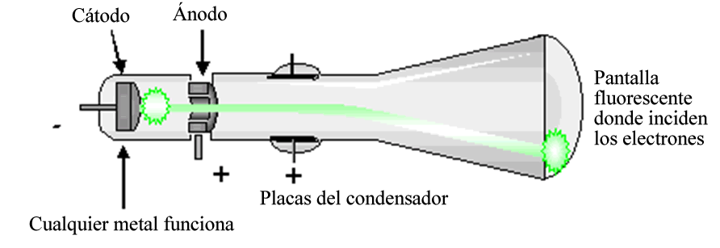
Tubo de Thomson: cátodo, ánodo con rendija, placas del condensador y pantalla fluorescente.
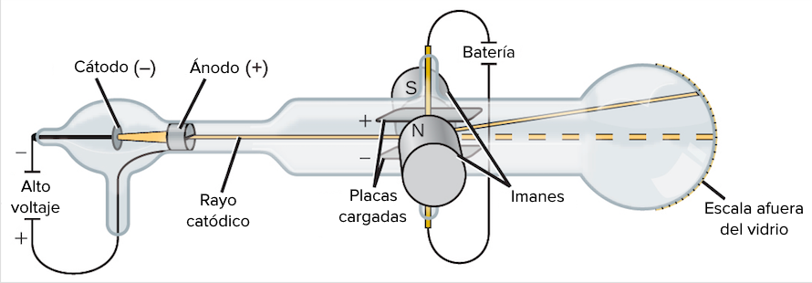
Montaje con placas cargadas e imanes: los campos eléctrico y magnético se pueden ajustar para compensarse.
¿Cómo se mide \(e/m\) sin ver el electrón?
Paso 1. Se aplican \(E\) y \(B\) cruzados y se ajusta \(B\) hasta que el haz vuelve a ir recto: las fuerzas se compensan.
\[ eE = evB \;\Rightarrow\; v = \frac{E}{B} \]
Paso 2. Se apaga \(B\) y se mide la desviación \(y\) en la pantalla. Con placas de longitud \(L\) y una distancia \(D\) hasta la pantalla:
\[ y = \frac{eE\,L}{m\,v^{2}}\left(\frac{L}{2}+D\right) \;\Rightarrow\; \frac{e}{m} = \frac{y\,v^{2}}{E\,L\,(L/2+D)} \]
El resultado de Thomson
\(\dfrac{e}{m_e} \approx 1{,}76\times10^{11}\) C/kg. Para el ion de hidrógeno (un protón), la electrólisis ya había dado \(\dfrac{e}{m_p} \approx 9{,}58\times10^{7}\) C/kg.
El cociente es \(\approx 1836\). Como la carga es la misma (ya se intuía), el electrón es unas 1836 veces más liviano que el átomo más ligero. Thomson estimó con sus propios datos que su masa era del orden de una milésima de la del hidrógeno.
La masa sola vino después
Con \(e/m\) no se obtiene \(m\) ni \(e\) por separado. En 1909–1913 Millikan midió \(e = 1{,}602\times10^{-19}\) C con gotas de aceite, y entonces sí: \(m_e = 9{,}109\times10^{-31}\) kg.
Thomson recibió el Nobel de Física en 1906. Su hijo, G. P. Thomson, compartió el de 1937 por demostrar que los electrones también se difractan como ondas: el padre descubrió la partícula y el hijo su carácter ondulatorio.
Simulador: el tubo de Thomson
Reproduce el experimento: desvía el haz con E, compénsalo con B y deduce \(e/m\)
Campo eléctrico \(E = V_p/d\):
Rapidez real de los electrones:
Velocidad del cociente \(E/B\):
Posición en la pantalla:
Radio de curvatura (solo B):
Medición de \(e/m\): pulsa el botón
Geometría: placas de longitud \(L = 5\) cm separadas \(d = 3\) cm; la pantalla está \(D = 20\) cm más allá. Con \(V_p > 0\) la placa inferior es la positiva: el campo \(E\) apunta hacia arriba y el electrón (carga negativa) es atraído hacia abajo (fuerza eléctrica, roja). Con \(B > 0\) (hacia afuera de la pantalla, puntos) la fuerza magnética apunta hacia arriba (azul); con \(B < 0\) (cruces), hacia abajo. La rapidez la fija \(V_a\): \(v = \sqrt{2eV_a/m}\).
Reto 1 · Encuentra la velocidad
Pon \(V_p = 150\) V y mueve \(B\) hasta que el haz llegue al centro. Lee \(E/B\): ese es el valor de \(v\), y no necesitas conocer \(V_a\). Compáralo con la rapidez real que muestra el simulador.
Reto 2 · La clave del experimento
Cambia \(V_a\) mientras el haz está compensado: el haz se desvía de nuevo. ¿Por qué? Porque \(v\) cambió pero \(E/B\) no. Cada valor de \(V_a\) necesita su propio \(B\) de compensación.
¿Qué pasa si invierto el signo de \(V_p\) y de \(B\) a la vez?
Las dos fuerzas invierten su sentido y siguen compensándose. La condición de equilibrio es \(|E| = v|B|\) con \(E\) y \(B\) del mismo signo.
4. Modelo atómico de Thomson (1904)
Si los átomos contienen electrones negativos y son neutros en conjunto, debe haber carga positiva que los compense. Thomson imaginó el átomo como una esfera maciza de electricidad positiva, de unos \(10^{-10}\) m de radio, con los electrones incrustados en número suficiente para que el conjunto resulte neutro.
La imagen popular es la de un pudín con pasas: el pudín es la carga positiva repartida, las pasas son los electrones. (En su versión original de 1904, Thomson los disponía en anillos giratorios, con la esperanza de explicar la tabla periódica.)
Lo que explica
Que la materia sea neutra y se electrice al ganar o perder electrones.
La existencia de iones y la conducción eléctrica.
Que los electrones puedan extraerse (rayos catódicos, calentando un metal).
Que el átomo sea estable: el electrón en equilibrio dentro de la esfera.
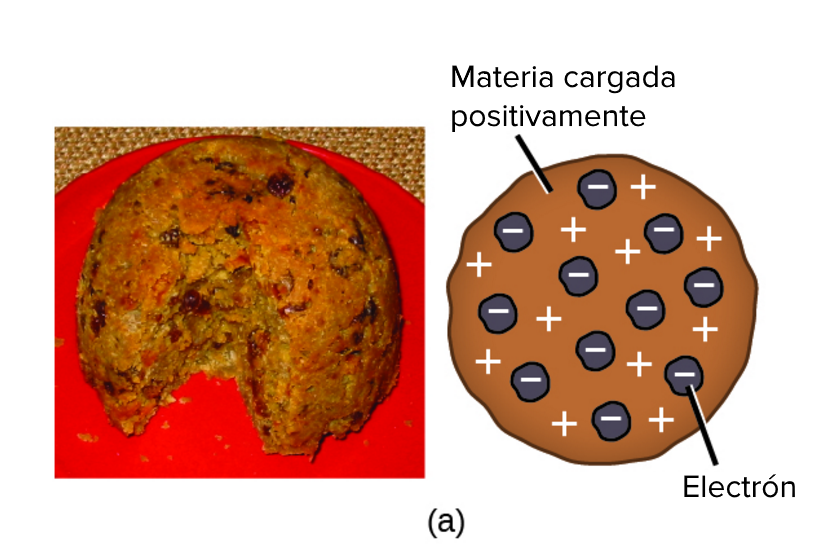
Modelo del «pudín de pasas»: esfera positiva con electrones incrustados.
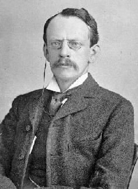
Joseph John Thomson (1856–1940).
Una predicción que ya lo ponía en aprietos
Dentro de una esfera uniforme de carga positiva, el campo crece linealmente con la distancia al centro. Un electrón desplazado sufre una fuerza restauradora proporcional al desplazamiento, es decir, un oscilador armónico:
Con \(R = 0{,}1\) nm resulta \(\omega \approx 1{,}6\times10^{16}\) rad/s, o sea \(f \approx 2{,}5\times10^{15}\) Hz y \(\lambda \approx 118\) nm (ultravioleta). El modelo predice una sola frecuencia de emisión; el hidrógeno real emite series enteras de líneas, con colores visibles incluidos. Las cifras no cuadran.
¿Por qué un modelo tan «raro» tuvo éxito?
Porque encajaba con todo lo que se sabía en 1904: neutralidad, electrización, rayos catódicos. Además era un modelo cuantitativo (se podían hacer cuentas) y venía de la autoridad de quien había descubierto el electrón. Su debilidad solo apareció cuando alguien hizo un experimento capaz de distinguir «carga repartida» de «carga concentrada».
5. El experimento de Rutherford, Geiger y Marsden (1909–1911)
La mejor manera de comprobar el pudín de Thomson es dispararle proyectiles
Ernest Rutherford ya sabía que las partículas alfa (emitidas por sustancias radiactivas) son núcleos de helio con carga \(+2e\). Eran la sonda ideal: pesadas, con energías de varios MeV y fáciles de detectar. En Manchester, Hans Geiger y el estudiante Ernest Marsden hicieron las mediciones.
El montaje
Fuente: una sustancia radiactiva (radón y sus descendientes) que emite alfas.
Colimador: un bloque de plomo con un orificio forma un haz fino.
Blanco: una lámina de oro, de unos 0,2–1 µm de espesor (del orden de mil capas de átomos). El oro se puede laminar mucho más que cualquier otro metal.
Detector: una pantalla de sulfuro de zinc que centellea al recibir una alfa, observada con un microscopio que gira alrededor de la lámina. Geiger y Marsden contaban los destellos a mano, en un cuarto oscuro.
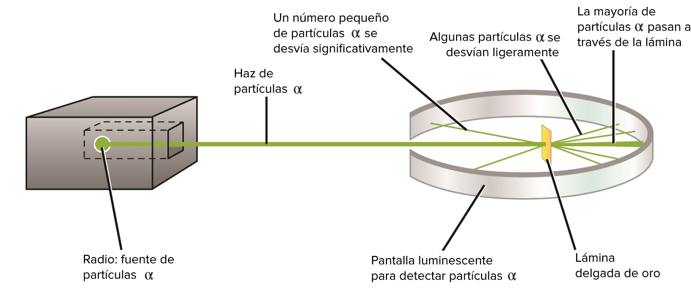
Montaje de Geiger y Marsden: fuente, haz colimado, lámina de oro y pantalla detectora.
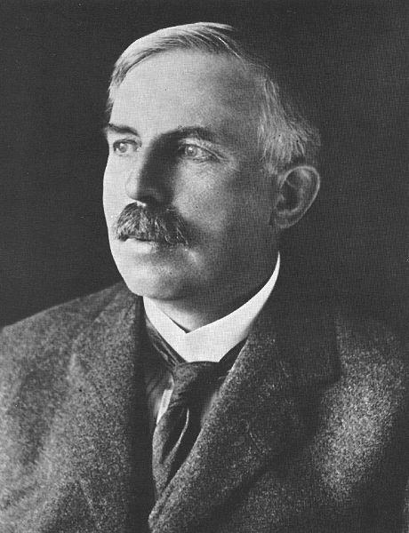
Ernest Rutherford (1871–1937).
¿Qué esperaba cada modelo?
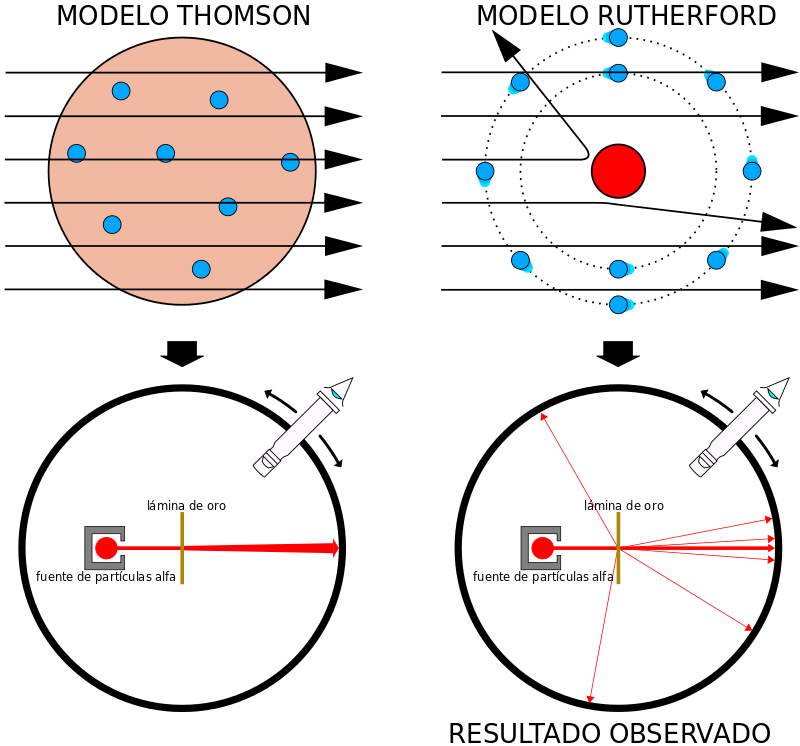
Predicción de Thomson (izquierda) frente a lo observado (derecha).
Argumento de Thomson
Una alfa tiene unas 7300 veces la masa de un electrón y viaja a unos 16 000 km/s (≈ 5 % de la velocidad de la luz). Chocar con un electrón es como una bala de cañón contra un mosquito: la desvía menos de una centésima de grado. Y la carga positiva, repartida por un volumen de 10⁻¹⁰ m, produce un campo débil.
Predicción
Desviaciones minúsculas, del orden de décimas de grado por átomo y apenas un grado al atravesar toda la lámina. Ninguna alfa debería retroceder.
6. Resultados e interpretación
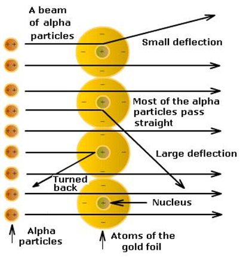
Lo observado: casi todas pasan, unas pocas se desvían mucho y una de cada ≈ 8000 «da la vuelta».
Casi todas atraviesan
La mayoría pasa en línea recta o con desviaciones de décimas de grado, como predecía Thomson. El campo producido por la carga positiva dispersa es débil.
Algunas se desvían mucho
Una fracción pequeña se desvía ángulos grandes. Esto exige un campo eléctrico intenso que el pudín no puede crear.
Unas pocas rebotan
Del orden de una de cada 8000 sale en sentido contrario (más de 90°). Rutherford lo comparó con disparar un proyectil de 15 pulgadas a un pañuelo de papel y que regresara a golpear al tirador.
La inferencia de Rutherford (1911)
Para frenar y devolver una alfa se necesita un campo muy intenso: la carga positiva debe estar concentrada en una región diminuta.
Como la inmensa mayoría de las alfa no sufre nada, esa región debe ser pequeñísima comparada con el átomo.
Como las alfa que rebotan lo hacen con poca pérdida de energía, el centro es mucho más pesado que una alfa: casi toda la masa está ahí.
Rutherford calculó la distribución angular esperada para una carga puntual (fórmula de dispersión de Rutherford) y coincidió con las medidas de Geiger y Marsden.
Distancia de máximo acercamiento (choque frontal, alfa de energía \(E\) contra núcleo de carga \(Ze\)):
\[ d_{\min} = \frac{2Ze^{2}}{4\pi\varepsilon_0 E} \approx \frac{2{,}88\,Z}{E\,[\text{MeV}]}\ \text{fm} \]
Para oro (\(Z = 79\)) con \(E = 5{,}5\) MeV: \(d_{\min} \approx 41\) fm. El núcleo es menor que eso (hoy sabemos que su radio es ≈ 7 fm).
¿Y los electrones?
Rutherford no sabía cómo estaban dispuestos: los imaginó «girando» a cierta distancia, como planetas. Esa parte del modelo fue la más débil y la que Bohr trabajó dos años después.
Simulador: dispersión de partículas alfa
El mismo haz de alfas llega a un átomo de Thomson y a un átomo de Rutherford
Constante \(K\) en \(\tan(\theta/2) = K/b\):
Acercamiento máximo (frontal):
Radio nuclear real (≈ 1,2 \(A^{1/3}\)):
Desviación máx. por átomo (Thomson):
Fracción de alfas desviadas más de…
Modelo de Thomson
Modelo de Rutherford
Pulsa el botón para ver cuántas de un millón de alfas aparecen en cada intervalo de ángulo.
Izquierda: la ventana mostrada es una región de pocos cientos de fm alrededor de un solo átomo de Thomson, con radio de 10⁵ fm: allí el campo es casi uniforme y las trayectorias siguen rectas. Derecha: núcleo puntual y trayectorias hiperbólicas (color según el ángulo). Cálculo de Rutherford en aproximación de dispersión simple, válida para ángulos grandes; el modelo de Thomson incluye dispersión múltiple (suma aleatoria de la desviación en cada capa de átomos).
Qué observar
Mueve la energía: al subirla, \(K\) y la curvatura de las trayectorias disminuyen. Mueve el elemento: con \(Z\) pequeño (aluminio) la dispersión es más débil que con oro. Aumenta el espesor y verás subir la fracción con ángulos grandes, proporcionalmente.
Casi todo el volumen del átomo es «vacío» en el sentido de que no hay materia concentrada allí, pero sí campos eléctricos y la nube de electrones, que le dan rigidez y color a la materia.
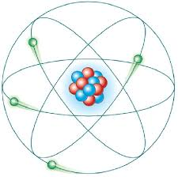
El átomo nuclear. El esquema exagera mucho el tamaño del núcleo.
Calculadora de escala
Cociente de radios:
…el átomo tendría un diámetro de
Densidad nuclear
≈ \(2{,}3\times10^{17}\) kg/m³. Una cucharadita de materia nuclear pesaría del orden de mil millones de toneladas.
¿Por qué orbitan?
La atracción eléctrica entre núcleo y electrón es \(\sim10^{39}\) veces mayor que la gravitacional entre ellos. Por eso el átomo es un problema eléctrico, no de gravedad.
Lo que vino después
Rutherford identificó el protón (1919). El neutrón lo descubrió Chadwick (1932) y completó el cuadro del núcleo.
8. Limitaciones del modelo de Rutherford
El átomo planetario predice su propio colapso
1. Inestabilidad
Según la electrodinámica clásica, una carga acelerada radia ondas electromagnéticas y pierde energía. Un electrón que gira está acelerado (aceleración centrípeta), así que debería perder energía cinética, describir una espiral y caer sobre el núcleo.
El átomo de hidrógeno de Rutherford duraría unos 16 picosegundos. Pero la materia lleva miles de millones de años estable.
2. Espectros
Un electrón en espiral irradiaría con una frecuencia que sube continuamente: el espectro sería continuo. Pero los átomos emiten solo líneas definidas: ciertas frecuencias, no otras.
Colapso clásico y átomo de Bohr
Tiempo:
Radio:
Frecuencia radiada:
Izquierda: electrón clásico que radia y cae. Derecha: electrón de Bohr en el nivel \(n = 1\), estable. Para poder verlo, cada vuelta dibujada equivale a unas 10 000 vueltas reales; toda la caída dura \(1{,}6\times10^{-11}\) s.
Un dilema serio
Rutherford tenía razón sobre el núcleo (experimento) y estaba equivocado sobre la dinámica de los electrones (teoría clásica). La salida no era corregir el modelo, sino aceptar que la física clásica no describe lo que pasa dentro del átomo. Ese es el paso de Bohr.
9. Modelo atómico de Bohr (1913)
Si la física clásica no sirve dentro del átomo, hay que cambiar las reglas
Niels Bohr trabajó con Rutherford en Manchester en 1912 y conoció de primera mano el problema del átomo planetario. En 1913 publicó una solución audaz que combinaba tres ingredientes:
el núcleo de Rutherford;
la cuantización de Planck (1900) y Einstein (1905): la energía se intercambia en paquetes \(hf\);
los espectros de líneas y la fórmula empírica de Balmer (1885), que nadie sabía explicar.
Su modelo reproducía con exactitud las líneas del hidrógeno, y esa precisión convenció a la comunidad científica. Bohr recibió el Nobel de Física en 1922.
Niels Bohr (1885–1962).
Los tres postulados
1Órbitas permitidas
Los electrones giran en órbitas circulares alrededor del núcleo por la atracción eléctrica. Solo son posibles ciertas órbitas (estados estacionarios), identificadas con \(n = 1, 2, 3, \dots\) y no existen órbitas intermedias.
2Sin radiación
Mientras está en una órbita permitida, el electrón no radia, pese a estar acelerado. Cada órbita tiene una energía fija \(E_n\). Esto da estabilidad al átomo y a la materia.
3Saltos cuánticos
Al pasar de una órbita a otra, el átomo emite o absorbe un fotón cuya energía es la diferencia entre ambos niveles:
\[ hf = |E_f - E_i| \]
Una mezcla incómoda, pero fructífera
El modelo de Bohr usa física clásica para la órbita (fuerza de Coulomb, Newton) y postulados cuánticos ad hoc para prohibir lo que la teoría clásica permite. Bohr lo sabía: era un puente provisional hacia una mecánica cuántica completa, que llegó en 1925–1926.
¿Qué significa «cuantizado»?
Una rampa permite cualquier altura; una escalera solo ciertas alturas. La energía del electrón en el átomo es como una escalera: puede estar en un escalón o en otro, pero nunca entre ellos.
10. Niveles de energía y saltos cuánticos
Cuando el átomo recibe energía (calor, una descarga, un fotón), uno o varios electrones saltan a un nivel superior: el átomo queda en un estado excitado. Al regresar a un nivel inferior, devuelve la diferencia de energía en forma de fotón.
Estado fundamental (\(n=1\)): el de menor energía, \(-13{,}6\) eV.
Energía de ionización: la necesaria para arrancar el electrón desde el fundamental, \(13{,}6\) eV (\(n \to \infty\), \(E = 0\)).
Los niveles se acercan entre sí al aumentar \(n\): se «apilan» hacia 0.
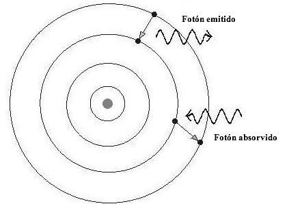
El electrón cambia de órbita al emitir o absorber un fotón.
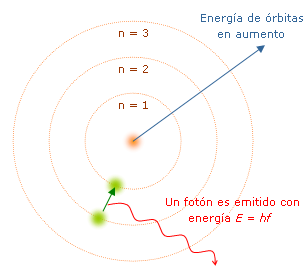
Las órbitas aumentan de energía con \(n\); el fotón emitido tiene energía \(E = hf\).
Consecuencias
Un átomo solo absorbe lo que puede emitir
Los fotones que el hidrógeno emite son los de energías \(E_i - E_f\), y son exactamente los mismos que absorbe en sentido contrario. Por eso el espectro de absorción es la «imagen en negativo» del de emisión.
Ejemplo
Un fotón azul (≈ 3 eV) no puede excitar un hidrógeno que está en \(n=1\): el primer salto exige 10,2 eV (ultravioleta, 121,6 nm). En cambio, el salto \(3\to2\) libera 1,89 eV: luz roja de 656 nm.
Prueba experimental: Franck y Hertz (1914)
Aceleraron electrones a través de vapor de mercurio. Los electrones solo perdían energía en «paquetes» de 4,9 eV, y el vapor emitía entonces luz ultravioleta de 254 nm: justo \(1240/4{,}9 \approx 253\) nm. Los niveles de energía no eran una idea teórica; los electrones en el laboratorio los «veían».
Curva de Franck–Hertz: máximos y mínimos separados por 4,9 V.
11. Radios y energías permitidos
De una sola regla de cuantización salen todas las órbitas del hidrógeno
Bohr eligió una condición que reproduce los espectros: el momento angular del electrón solo puede valer múltiplos enteros de \(\hbar = h/2\pi\):
\[ L = m v r = n\hbar,\qquad n = 1, 2, 3, \dots \]
Se combina con la segunda ley de Newton para la fuerza de Coulomb (\(m v^{2}/r = k e^{2}/r^{2}\)). Despejando:
Órbitas \(n = 1\) a \(7\) (capas K, L, M, N, O, P, Q). Los radios crecen como \(n^2\).
Una forma de entenderlo
De Broglie propuso en 1924 que el electrón se comporta como una onda de longitud \(\lambda = h/mv\). Entonces \(m v r = n\hbar\) equivale a \(2\pi r = n\lambda\): la órbita permitida es aquella en la que caben exactamente \(n\) ondas, como una onda estacionaria en una cuerda cerrada.
n
Capa
Radio \(r_n\)
Rapidez \(v_n\)
Energía \(E_n\)
Período \(T_n\)
1
K
0,0529 nm
2,19 × 10⁶ m/s
−13,6 eV
1,52 × 10⁻¹⁶ s
2
L
0,212 nm
1,09 × 10⁶ m/s
−3,40 eV
1,22 × 10⁻¹⁵ s
3
M
0,476 nm
7,29 × 10⁵ m/s
−1,51 eV
4,10 × 10⁻¹⁵ s
4
N
0,847 nm
5,47 × 10⁵ m/s
−0,850 eV
9,73 × 10⁻¹⁵ s
5
O
1,32 nm
4,38 × 10⁵ m/s
−0,544 eV
1,90 × 10⁻¹⁴ s
El electrón del hidrógeno en el estado fundamental da unas \(6{,}6\times10^{15}\) vueltas por segundo y se mueve a menos del 1 % de la velocidad de la luz, por eso la mecánica no relativista basta.
Si el radio crece como \(n^2\) y la energía cae como \(1/n^2\), ¿por qué la energía es negativa?
Porque el cero se elige en el electrón libre y en reposo (\(n \to \infty\)). Un electrón ligado tiene menos energía que uno libre: hay que aportar energía para liberarlo. El signo menos solo expresa que está atrapado.
Simulador: el átomo de hidrógeno de Bohr
Elige dos niveles y observa el salto, la energía y el color del fotón
Energía del fotón:
Longitud de onda:
Frecuencia:
Región del espectro:
Serie:
Radios:
Prueba de absorción: ¿puede el hidrógeno en \(n=1\) absorber este fotón?
Las dos órbitas dibujadas tienen el radio \(r_n = n^2 a_0\) a escala. Las longitudes de onda se calculan con \(\lambda = hc/\Delta E\) y \(E_n = -13{,}6\ \text{eV}/n^2\); los valores son en el vacío (en el aire resultan unos 0,2 nm menores).
Reto 1
¿Existe algún salto que termine en \(n=2\) y produzca luz azul (≈ 486 nm)? Encuentra \(n_i\). Luego prueba con ultravioleta cercano (≈ 410 nm).
Reto 2
En la prueba de absorción, busca cuántos valores de energía entre 10 y 13,6 eV son absorbidos. ¿Qué pasa por encima de 13,6 eV?
12. Espectros atómicos
Espectro continuo
Lo emite un sólido o líquido caliente (el filamento de una bombilla): todos los colores, sin saltos.
Espectro de emisión
Un gas poco denso, excitado por calor o descarga, emite solo líneas brillantes: unas pocas frecuencias, siempre las mismas para cada elemento.
Espectro de absorción
Si luz continua atraviesa un gas más frío, este absorbe las mismas frecuencias que emitiría: aparecen líneas oscuras sobre el fondo continuo.
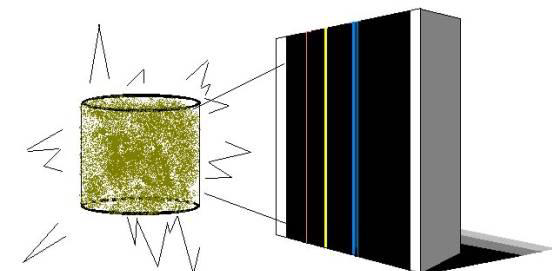
Emisión: gas excitado → prisma → líneas brillantes.
Cada elemento tiene sus propios niveles de energía y, por tanto, su propio conjunto de líneas. Gustav Kirchhoff y Robert Bunsen lo explotaron desde 1859: identificaron elementos nuevos (cesio, rubidio) solo por sus líneas.
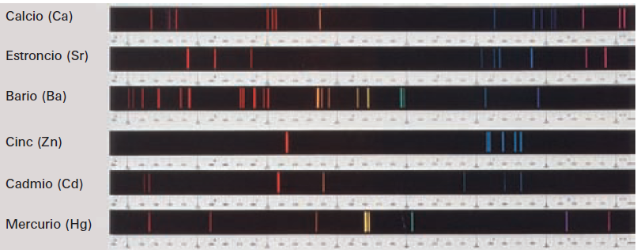
Espectros de emisión de Ca, Sr, Ba, Zn, Cd y Hg.
El Sol y el helio
El espectro solar es continuo con cientos de líneas oscuras (líneas de Fraunhofer): los gases más fríos de la atmósfera solar absorben luz. En 1868, durante un eclipse, se halló una línea amarilla que no correspondía a ningún elemento conocido en la Tierra. Se llamó helio (del griego helios, Sol) y solo se aisló en la Tierra en 1895.
Espectro solar con líneas de absorción.
Aplicaciones
La astronomía deduce la composición, la temperatura y el movimiento (por el efecto Doppler) de estrellas y galaxias; la química analítica identifica metales por el color de su llama; las lámparas de sodio (589 nm) iluminan calles con luz casi monocromática; los letreros de neón rojo emiten líneas del neón.
Simulador: espectroscopio virtual
Compara las «huellas digitales» de cinco gases en emisión y en absorción
Líneas visibles de este gas:
Línea más cercana al cursor:
Energía del fotón de esa línea:
Las líneas son las más intensas de cada espectro en el visible, con longitudes de onda en el aire; el brillo relativo se ha simplificado. En el hidrógeno, las líneas coinciden con la serie de Balmer del siguiente apartado.
Tubos de descarga de varios gases y sus espectros.
Lámpara de sodio: casi toda su luz está en el doblete de 589 nm.
13. Las series de Balmer y Rydberg
Una fórmula empírica de 1885 que Bohr logró derivar en 1913
El maestro suizo Johann Balmer (1885) notó que las cuatro líneas visibles del hidrógeno seguían una regla numérica sencilla. Rydberg (1888) la generalizó y la escribió en términos del número de onda \(1/\lambda\):
Para la serie de Balmer \(n_f = 2\): \(n_i = 3, 4, 5, 6\) dan las líneas \(656\), \(486\), \(434\) y \(410\) nm. La fórmula funcionaba, pero nadie sabía por qué.
El triunfo de Bohr
Del modelo de Bohr, con \(hf = E_i - E_f\), sale la fórmula de Rydberg y además un valor de \(R\) en términos de constantes fundamentales:
\[ R_\infty = \frac{m_e k^{2} e^{4}}{4\pi\hbar^{3}c} \approx 1{,}097\times10^{7}\ \text{m}^{-1} \]
El acuerdo con el valor medido es mejor que 1 %.
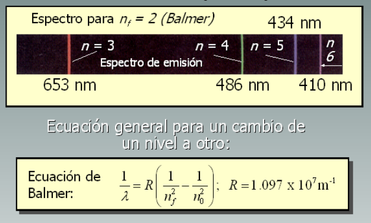
Serie de Balmer del hidrógeno. (La figura redondea Hα a 653 nm; el valor medido es 656,3 nm.)
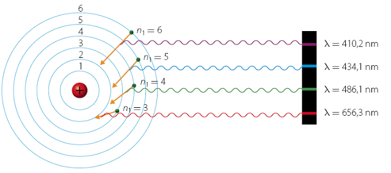
Cada línea de Balmer es un salto desde un nivel superior hasta \(n = 2\).
Todas las series del hidrógeno
Serie
\(n_f\)
Región
Primera línea
Límite de la serie
Año
Lyman
1
Ultravioleta
121,6 nm
91,2 nm
1906
Balmer
2
Visible y UV cercano
656,5 nm
364,7 nm
1885
Paschen
3
Infrarrojo cercano
1876 nm
821 nm
1908
Brackett
4
Infrarrojo
4052 nm
1459 nm
1922
Pfund
5
Infrarrojo lejano
7460 nm
2279 nm
1924
Longitudes de onda en el vacío. Las líneas de Balmer en el aire son ≈ 0,2 nm menores (Hα: 656,3 nm). El «límite» corresponde a \(n_i \to \infty\): el electrón se libera.
El tono rojizo de las nebulosas de emisión es la línea Hα (\(3\to2\)) del hidrógeno.
¿Por qué solo la serie de Balmer era conocida en 1885?
Porque es la única que cae (casi toda) en el visible, donde los espectroscopios de la época funcionaban bien. Las demás están en el ultravioleta (Lyman, que el aire absorbe) o en el infrarrojo, y requirieron detectores especiales.
14. Cuantización de la energía
La física cuántica establece que, en el micromundo, la energía de un sistema no puede tomar cualquier valor: solo ciertos valores discretos. Los cuantos de luz, y en general de la radiación electromagnética, son los fotones con energía \(E = hf\).
¿De dónde sale la cuantización?
De confinar una onda. Una cuerda de guitarra sujeta en los extremos solo puede vibrar con ciertas frecuencias (armónicos). Una partícula atrapada, como una onda de materia, solo admite ciertas energías. Cuanto más pequeña la región, más separados quedan los niveles.
Partícula en una caja de ancho \(L\):
\[ E_n = \frac{n^{2}h^{2}}{8\,m\,L^{2}},\quad \psi_n(x)=\sqrt{\tfrac{2}{L}}\sin\!\Big(\frac{n\pi x}{L}\Big) \]
Electrón en una caja unidimensional
Energía \(E_n\):
Primer salto \(E_2 - E_1\):
Longitud de onda de ese fotón:
Con \(L \approx 0{,}1\) nm (tamaño atómico) las energías son de decenas de eV: el orden de magnitud de los niveles atómicos. Los gráficos muestran los niveles (izquierda) y la función de onda del nivel elegido (derecha).
Un átomo
Electrón confinado por el núcleo en ≈ 0,1 nm. Niveles separados por varios eV: se ven como líneas.
Un núcleo
Nucleones confinados en ≈ 10⁻¹⁴ m. Niveles separados por MeV: emiten rayos gamma.
Un objeto grande
Con \(L\) de centímetros, los niveles de un electrón están tan juntos que el espectro parece continuo: la cuantización pasa desapercibida.
15. Más allá de Bohr: el átomo cuántico
¿Qué se le escapaba al modelo de Bohr?
Átomos con más de un electrón: ya el helio (2 electrones) falla.
Estructura fina de las líneas, efecto Zeeman (líneas que se desdoblan en un campo magnético) y las intensidades relativas.
Predice que el estado fundamental tiene \(L = \hbar\), pero el real tiene \(L = 0\).
No explica por qué los estados estacionarios no radian, ni por qué el momento angular está cuantizado.
La idea de «órbita» con posición y velocidad exactas contradice el principio de incertidumbre de Heisenberg (1927).
Lo que sí conservó
Las energías \(E_n = -13{,}6\ \text{eV}/n^2\) del hidrógeno siguen siendo correctas en la teoría actual. Bohr acertó en los niveles y se equivocó en la imagen.
La respuesta de Schrödinger (1926)
El electrón se describe con una función de onda \(\psi\) que resuelve la ecuación de Schrödinger. Su cuadrado, \(|\psi|^2\), da la probabilidad de encontrarlo en cada punto: no hay órbitas, hay orbitales.
Cada orbital se identifica con tres números cuánticos: \(n\) (energía y tamaño), \(l\) (forma, \(l = 0, \dots, n-1\)) y \(m_l\) (orientación). El espín (1927) añade un cuarto.
Orbitales del hidrógeno: nubes de probabilidad.
Probabilidad radial: ¿dónde está el electrón?
Radio más probable (máximo mayor):
Radio de Bohr \(n^2 a_0\):
Radio medio \(\langle r\rangle = \tfrac{a_0}{2}[3n^2 - l(l+1)]\):
Nodos radiales (\(n - l - 1\)):
Momento angular \(\sqrt{l(l+1)}\,\hbar\):
Curva: \(P(r)=r^2|R_{nl}(r)|^2\), la probabilidad de encontrar el electrón a una distancia \(r\) del núcleo (por unidad de longitud). La línea vertical discontinua marca la órbita de Bohr. Para los orbitales «circulares» (\(l = n-1\): 1s, 2p, 3d), el máximo coincide exactamente con \(n^2 a_0\).
Dos mensajes de la simulación
1) El orbital 1s tiene su máximo justo en \(a_0\): el radio de Bohr resulta ser el radio más probable. 2) Los orbitales no circulares (2s, 3s, 3p) tienen varios máximos y nodos: el electrón no sigue una trayectoria; su posición solo tiene probabilidades.
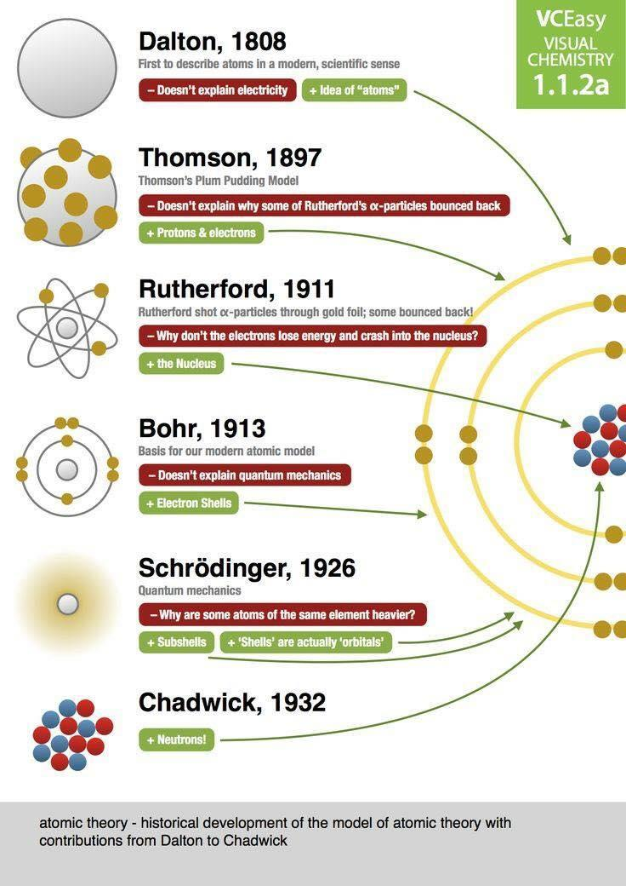
Línea de tiempo del modelo atómico, de Dalton (1808) a Chadwick (1932).
En conclusión…
Modelo
Idea central
Explica
No explica
Dato que lo derrumba
Dalton (1803)
Átomos macizos e indivisibles
Leyes de la química (conservación, proporciones)
Electricidad; isótopos
Electrólisis, rayos catódicos
Thomson (1904)
Esfera positiva con electrones
Neutralidad, electrón
Dispersión alfa a ángulos grandes; espectros
Lámina de oro (1909–1911)
Rutherford (1911)
Núcleo pequeño y electrones afuera
Dispersión alfa; átomo casi vacío
Estabilidad; espectros de líneas
Radiación clásica; espectros
Bohr (1913)
Niveles de energía cuantizados
Espectro del hidrógeno; estabilidad
Átomos con varios electrones; intensidades
Estructura fina, helio, Zeeman
Cuántico (1926–)
Orbitales y probabilidades
Química y espectros de átomos y moléculas
Se refina con relatividad y electrodinámica cuántica
—
Ideas clave
La mejor representación de un átomo es su diagrama de niveles de energía. Los dibujos con bolitas y órbitas son útiles pero engañosos.
La diferencia entre dos niveles, \(\Delta E = E_f - E_i\), es la energía que el átomo puede absorber o emitir.
Emisión y absorción son saltos entre estados de energía, no un flujo continuo.
El estudio de la materia consiste en refinar cada vez mejor el modelo de Bohr.
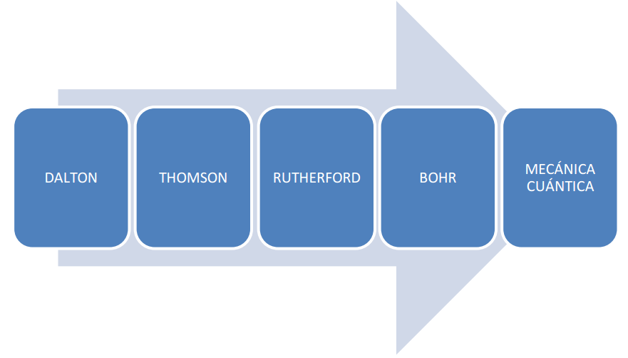
De Dalton a la mecánica cuántica.
Lo que se llevan
Un buen científico no pregunta «¿es verdadero este modelo?» sino «¿para qué sirve y dónde falla?».
Explica por qué el átomo de Bohr es un buen punto de partida pero no la imagen correcta, y cómo son realmente los orbitales. Las animaciones, según sus autores, son cualitativas.
Simulaciones y lecturas
Orbitales atómicos (Falstad)
Visualiza orbitales del hidrógeno en 3D y cambia \(n, l, m\).
Con las herramientas de esta presentación puedes explorar los temas de la clase: el simulador del tubo de Thomson (diapositiva 6), la dispersión de Rutherford (diapositiva 10), el átomo de Bohr (diapositiva 16) y el espectroscopio virtual (diapositiva 18).
Preguntas de repaso
Intenta responder antes de abrir cada respuesta
1. ¿Qué postulados de Dalton sabemos hoy que son falsos y qué los refutó?
El de la indivisibilidad (electrón, núcleo, fisión) y el de la igualdad de masa para un elemento (isótopos). Se conservan los de átomos distintos para elementos distintos y la combinación en enteros sencillos.
2. En un tubo de Thomson el haz no se desvía con \(E = 6000\) V/m y \(B = 0{,}50\) mT. ¿Qué rapidez tienen los electrones?
\(v = E/B = 6000/(5{,}0\times10^{-4}) = 1{,}2\times10^{7}\) m/s, es decir, el 4 % de la velocidad de la luz. Esto no necesita saber \(e\) ni \(m\).
3. ¿Por qué los resultados de Geiger y Marsden contradicen el modelo del pudín?
En el modelo de Thomson la carga positiva está repartida y el campo máximo es pequeño: cada átomo desvía una alfa menos de 0,03°, y acumular un retroceso (> 90°) es prácticamente imposible. Que 1 de cada ≈ 8000 rebote exige una carga positiva concentrada.
4. ¿Qué tan cerca llega al núcleo de oro una alfa de 7,7 MeV en un choque frontal?
\(d_{\min} \approx 2{,}88 \times 79 / 7{,}7 \approx 30\) fm. Como el radio del núcleo de oro es ≈ 7 fm, la alfa se detiene mucho antes de tocarlo: solo actúa la repulsión eléctrica.
5. Dos razones por las que el átomo de Rutherford es incompatible con la realidad.
(i) Un electrón que gira está acelerado y, según el electromagnetismo clásico, radia: perdería energía y caería en unos \(10^{-11}\) s. (ii) La radiación tendría un espectro continuo, no líneas.
6. Un electrón de hidrógeno baja de \(n=4\) a \(n=2\). ¿Qué fotón emite?
\(\Delta E = 13{,}6\,(1/4 - 1/16) = 2{,}55\) eV, \(\lambda = 1240/2{,}55 \approx 486\) nm: luz azul-verdosa (la línea Hβ de la serie de Balmer).
7. ¿Puede un hidrógeno en \(n=1\) absorber un fotón de 11 eV? ¿Y uno de 15 eV?
El de 11 eV no: no coincide con 10,2 eV (salto a \(n=2\)) ni con 12,09 eV (\(n=3\)). El de 15 eV sí: supera 13,6 eV, ioniza el átomo y el electrón sale con 1,4 eV de energía cinética.
8. ¿Cómo se explica que en el espectro del Sol haya una línea oscura en 656 nm?
Hidrógeno de las capas externas del Sol, más frías que la superficie, absorbe justo los fotones de la transición \(3\leftrightarrow2\) (línea Hα). La misma línea aparece brillante en una nebulosa, donde el hidrógeno emite.
9. ¿Por qué Bohr decía que el átomo no «se cae» al núcleo, y qué decimos hoy?
Bohr lo postuló: en las órbitas permitidas no hay radiación. Hoy lo explica la mecánica cuántica: confinar al electrón en una región pequeña le obliga a tener una energía cinética mínima (onda estacionaria), y el estado de menor energía es el fundamental.